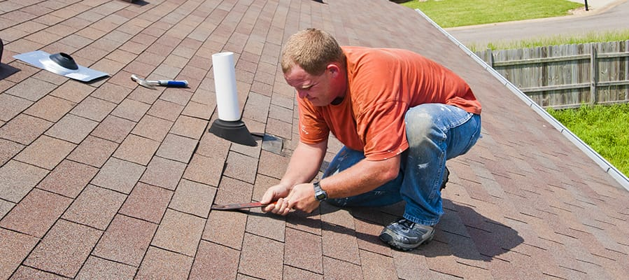
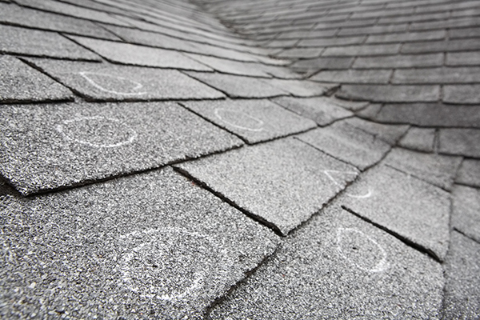

North Texas sits in hail alley, and Texas leads the nation in hail events year after year. If a storm just came through, don't wait on it. Get a free inspection and let us tell you exactly what's damaged and what your insurance should cover.
The first 24 to 48 hours after a hailstorm or high wind event matter. Insurance companies want damage documented quickly and accurately, and the longer you wait, the easier it is for a claim to get questioned. Here's how to handle it.

Most storm damage isn't obvious from the driveway. These are the warning signs we look for on every inspection.
Soft, dark bruises on shingles where hail hit hard enough to break down the surface without tearing it.
Metal shows hail impact fastest. Dented gutters, vents, and flashing are usually the clearest sign a roof was hit too.
Wind gusts crack shingles or rip them off outright, leaving your decking exposed to the next rain.
Hail punches through and cracks siding, letting moisture in behind the wall.
Cracked panes, dented screens, and damaged frames often get missed until someone looks closely.
A pile of granules in your gutters means the storm stripped protective coating off your shingles.

A hailstorm doesn't stop at your roofline. When we inspect, we go over every surface a storm could have hit, so nothing gets left off the claim and nothing gets missed until it's a bigger problem.
We check the whole property and give you a straight answer on what's storm damage.
We hand you a documented report and a clear estimate to file with your insurance claim.
Once the claim is approved, our crews repair or replace fast and to spec.
Final walkthrough, cleanup, and a home that's protected before the next storm rolls in.
We're at every adjuster meeting and document all the damage, so your claim covers a full replacement and gets your home back to pre-storm condition.
After a storm hits, we move quick. Free inspections are scheduled within days, not weeks.
You deal with the people whose name is on the truck, not a call center reading from a script.
Fully licensed in both Texas and Oklahoma, with workmanship we stand behind.
We protect your yard, sweep for debris and nails, and haul away everything when we're done.
Based in Burkburnett and working across North Texas and Southern Oklahoma, we're your neighbors.
Most hail damage isn't visible from the ground. Dented gutters and vents, bruised shingles, and granules in your gutters are common signs, but the surest way to know is a free professional inspection. We'll get up there and give you a straight answer.
As soon as you have documentation. Most policies allow a year or more to file, but the sooner it's documented, the stronger the claim. We recommend scheduling an inspection within a week or two of any significant storm.
In most cases, yes. Homeowners policies typically cover hail and wind damage to your roof, siding, gutters, and windows, minus your deductible. We inspect for free and help you file so nothing gets missed.
Yes. If a storm left your roof exposed, call us and we'll get a tarp on it to stop further water damage while your claim and repair get sorted out.
It varies by insurer, but most claims are approved within a few weeks once documentation and an adjuster meeting are complete. We stay on it the whole way so it doesn't stall out.
Expert repair and replacement for storm damaged roofs, done fast and to spec.
Learn MoreStorm damaged siding restored or replaced to protect your home and its curb appeal.
Learn MoreNo cost, no pressure, just an honest look at your project and a fair price to get it done right.
844-569-DAWG